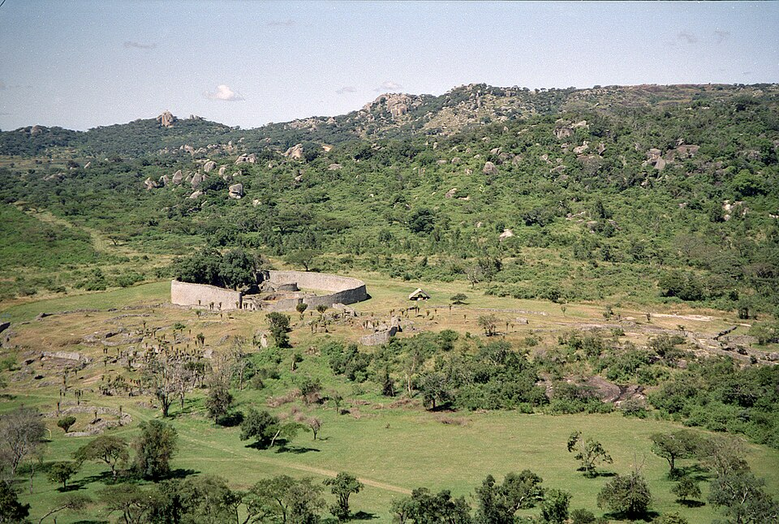

FILE A42-HS-050 // HISTORY & SOCIETIES
Great Zimbabwe and Colonial Denial of African Authorship
ASSESSMENT: Colonial authorities promoted false foreign origins; archaeological evidence establishes African builders.
Great Zimbabwe is a major stone-built center created by African societies between roughly the eleventh and fifteenth centuries. Colonial writers and officials long attributed it to Phoenicians or other outsiders, rejecting African authorship. The denial was tied to racial ideology and settler claims; modern archaeology has thoroughly overturned it.


Claim and historical context
European travelers described the ruins in the nineteenth century, and colonial administrations created narratives that separated the stone architecture from local African history. Cecil Rhodes’s antiquities commission promoted foreign-origin theories, while excavation removed artifacts and distorted site contexts.
Chronology and primary record
Archaeological stratigraphy, local pottery, ironworking, trade goods, and radiocarbon dating place Great Zimbabwe within regional Shona histories. The site’s architecture and material culture developed over centuries, with connections to Indian Ocean trade rather than an imported ancient colony.
What the record establishes
Early investigators such as David Randall-MacIver and Gertrude Caton-Thompson argued for African origins based on archaeological evidence. Colonial officials resisted these conclusions. Later scholarship demonstrates how political authority shaped the interpretation, but does not imply all archaeological findings were centrally falsified.
Competing interpretations and counterevidence
The foreign-origin theory has no credible evidentiary basis. Some details of chronology, political organization, and regional interaction remain debated. The history of denial is itself documented in administrative decisions, museum practice, and the changing language of textbooks.
Calibrated verdict
The verdict is that African societies built Great Zimbabwe; colonial denial reflected racialized scholarship and political interests. The case is a real historiographic distortion and institutional suppression of African agency, not a mystery about who built the site.
Evidence that could change this assessment
New excavation and environmental data can refine settlement chronology and regional networks. Evidence for authorship is already overwhelming; revision would require a coherent alternative account that explains local material continuity rather than isolated imported objects.
Source notes and limitations
These selected records and named research sources address Great Zimbabwe and Colonial Denial of African Authorship; each citation supports only the specific historical point identified in its note.
- UNESCO World Heritage Centre, “Great Zimbabwe National Monument”Site history, African builders, and archaeological significance.
- Peter Garlake, “Great Zimbabwe,” African Archaeological ReviewAcademic study of the archaeology and its colonial interpretation.
- Innocent Pikirayi, “Great Zimbabwe in Historical Archaeology,” Historical ArchaeologyAcademic analysis of chronology, abandonment, and colonial interpretation.